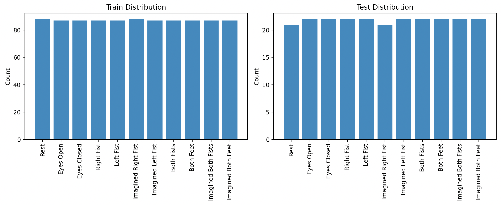
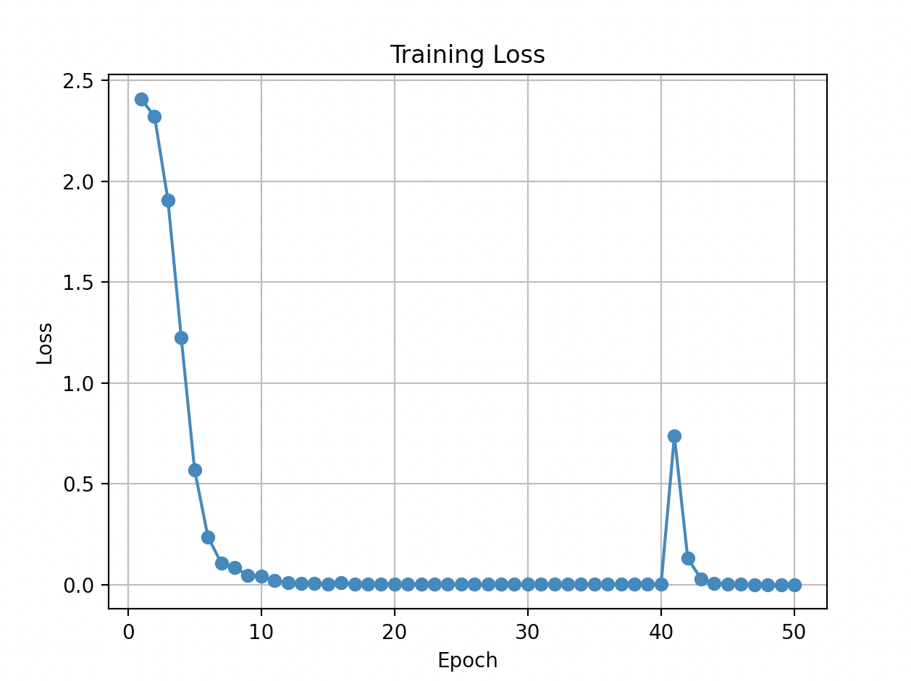
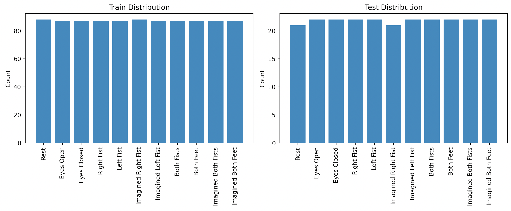
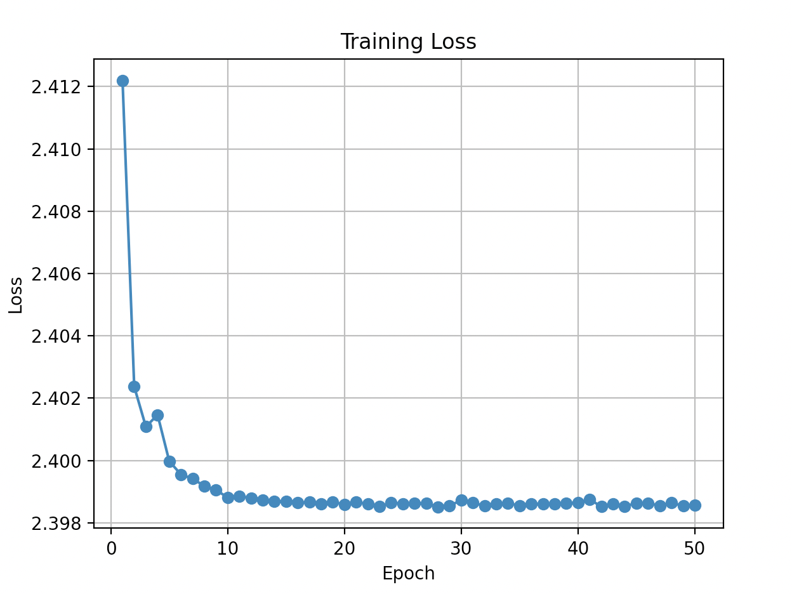

11-class motor imagery classifier on raw 64-channel EEG, covering both real and imagined bilateral and unilateral movements, trained with stratified splits and per-class probability diagnostics.
This is the full-scope classification target of the project: distinguish Rest, Eyes Open, Eyes Closed, Real Right Fist, Real Left Fist, Imagined Right Fist, Imagined Left Fist, Real Both Fists, Real Both Feet, Imagined Both Fists, and Imagined Both Feet from a single 64-channel EEG recording. The same shallow 1D CNN from Script 01 is extended to handle 11 output classes with a lower learning rate (1e−4 vs. 1e−3) and up to 1000 training epochs.
# n_classes computed automatically from folder_paths dict
model = SimpleEEGCNN(train_d[0].shape[0], min_len, n_classes).to(device)
# Per-class probability histogram — one subplot per class
probs_by_class = [[] for _ in range(n_classes)]
with torch.no_grad():
for x, _ in test_loader:
probs = torch.softmax(model(x.to(device)), dim=1).cpu().numpy()
for row in probs:
for i, p in enumerate(row):
probs_by_class[i].append(p)At 11 classes the confusion matrix alone does not tell you much about where predictions cluster. The per-class probability histogram grid is more revealing: a class with a well-peaked histogram near 1.0 is confidently classified; a flat histogram indicates the model has learned nothing discriminative for that class. In EEG motor imagery, classes that are cognitively and neurally similar (e.g. Imagined Right Fist vs. Real Right Fist) are expected to produce confused histograms, and this diagnostic makes that concrete.
Stratified splits (stratify=labels) are essential here because class sizes are not equal across the 11 categories. Without stratification, the test set could by chance contain a majority of one class, making accuracy misleading.
50 epochs, lr=0.001. Accuracy ranged from 8.75% to 22.92%, mean 17.63%. Chance for 11 classes is 9.09%. The worst run (8.75%) is below chance — within statistical noise given the ~22 test samples per class. The confusion matrices across all runs show a consistent pattern: Rest is classified reasonably well, but all 9 movement classes scatter across each other with no reliable diagonal.
| Metric | Value |
|---|---|
| Best accuracy | 22.92% — Trial 10 |
| Worst accuracy | 8.75% — Trial 3 |
| Mean accuracy | 17.63% |
| Chance baseline (11 class) | 9.09% |
| Margin above chance (mean) | +8.54 pp |
| Epochs / LR | 50 / 0.001 |




Three compounding problems explain the near-chance performance. First, the raw time-series input requires the network to learn frequency-selective filters from scratch — a 2-layer CNN lacks the depth to do this reliably. Second, the 11 classes include neurophysiologically nearly-identical pairs: Real Right Fist vs. Imagined Right Fist differ only in whether the hand actually moved, a distinction that manifests as subtle beta-band power changes rather than gross waveform differences. Third, 50 training epochs with lr=0.001 is insufficient for a network learning from unprocessed multichannel EEG at 11-way classification. The near-zero training loss confirms memorization; the near-chance test accuracy confirms no generalization.
17.63% mean on an 11-class problem establishes the lower bound. State-of-the-art on this exact benchmark uses EEGNet or ShallowConvNet with subject-specific normalization and reaches 60–80%. The gap is architectural, not a data problem.